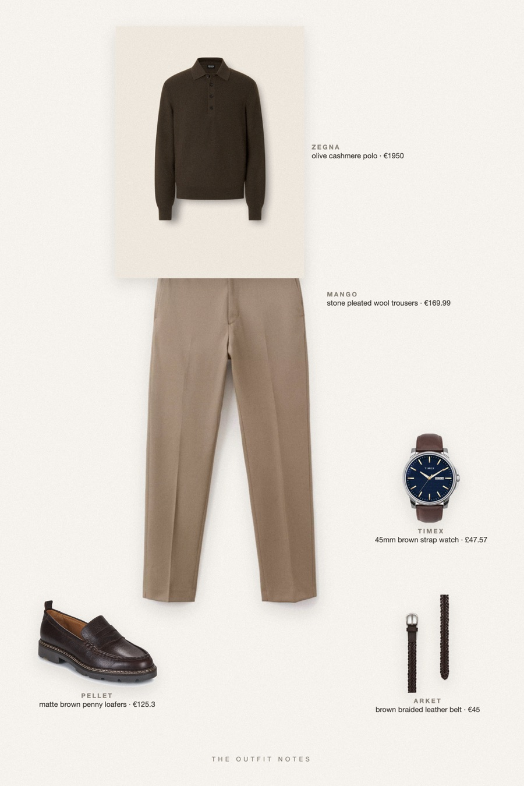
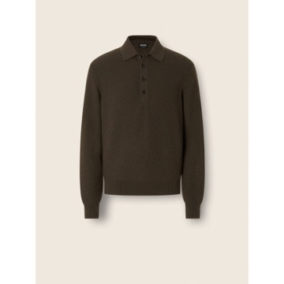

Olive Hour
olive polo, stone trousers

Old money fall outfit for men, autumn 2026: a dark olive cashmere knit polo (Zegna Oasi) over high-waisted stone wool trousers by Mango with pleats and a clean crease. Finished with Pellet chocolate loafers, an ARKET braided belt and a Timex leather watch. Classy, quiet luxury men's fall style that you can rebuild for less.
The pieces
This page contains affiliate links: if you buy through them, we may earn a commission at no extra cost to you. Disclosure.

Zegna
Olive cashmere polo
Shop Mango
Mango
Stone pleated wool trousers
Shop Pellet
Pellet
Matte brown penny loafers
Shop ARKET
ARKET
Brown braided leather belt
Shop Timex
Timex
45mm brown strap watch
Shop
Prices are indicative, taken when the look was published, and may have changed. Pictures of the outfit are AI-generated illustrations of real products; the product photos are the retailers' own.
Published 2 October 2026.